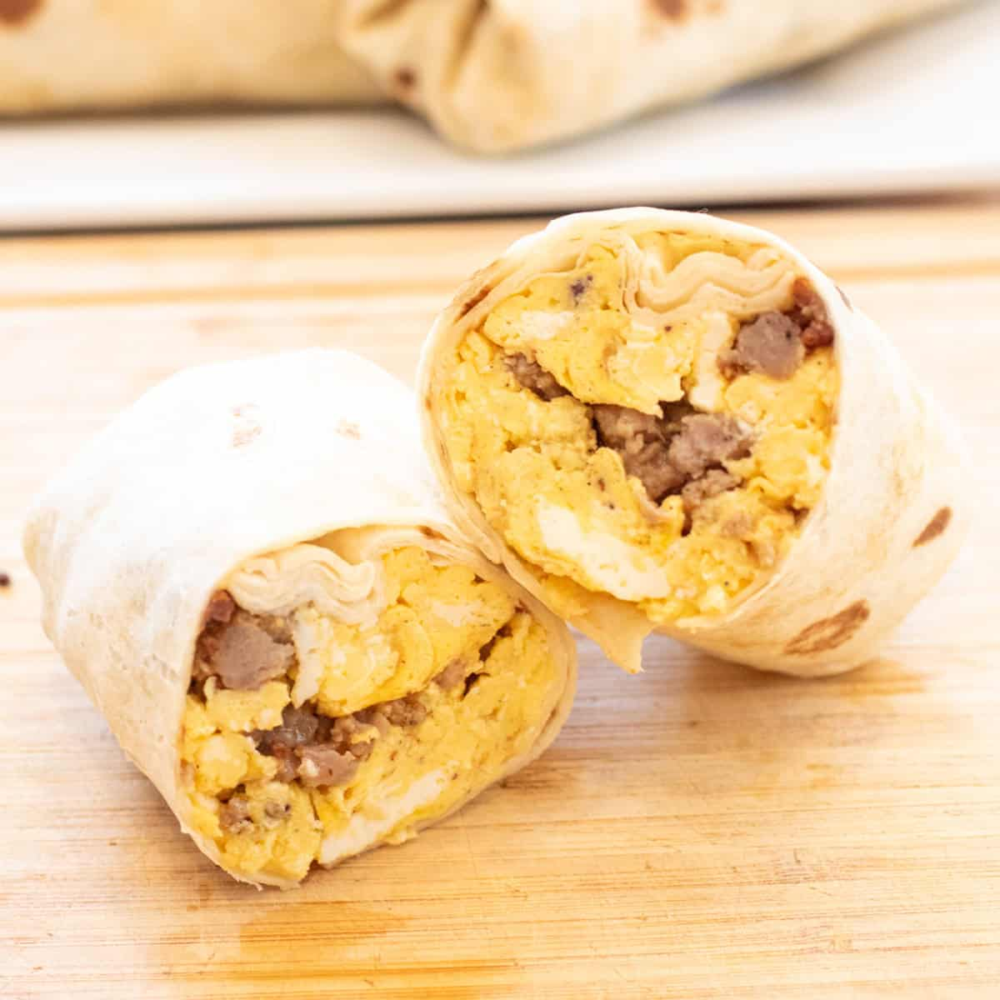

Breakfast Burrito
Return Home

Ingredients
- 2 Tbsp Chili Powder
- 1/2 tsp Paprika (Smoked if possible)
- 1/2 Tbsp Cumin Powder
- 2 tsp Onion Powder
- 2 tsp Garlic Powder
- 2 tsp Black Pepper
- 1 tsp Salt
- 2 pinch Oregano
- 6-8 Burrito Size Tortillas
- 16 oz Fat Free Cottage Cheese
- 1 lbs 93% Lean Ground Turkey
- 2 cups Spinach, chopped (or leafy green of your choice)
- 18 lg Eggs, beaten
Instructions
- Heat large skillet on medium heat.
- While skillet is heating, combine all seasonings in small dish.
-
Add all ground turkey, seasonings, spinage, and cottage cheese.
- Cook until thickened, stiring occasionally.
-
Once mixture has thickend, there are no chucks of cottage cheese
remaining, and there is very little liquid left, transfer it to a large
dish to cool. I prefer a glass casorle dish.
- Turn heat down to med/low and add eggs.
- Gently stir until thoroughly cooked and scrambled.
- Once cooked, transfer to large bowl to cool.
-
Allow meat and eggs to cool a little, then portion out to burritos as
desired.
-
Wrap and store burritos. Can be frozen and thawed days later for easy
meal prep.
Tip for even portions: I like to get out a third large
bowl and place that on my kitchen scale. I zero it out and then combine
both the egg and turkey mixtures in it. I can mix it all in there too.
Then I check the weight and devide that by how many burritos I want to
make.
Return Home